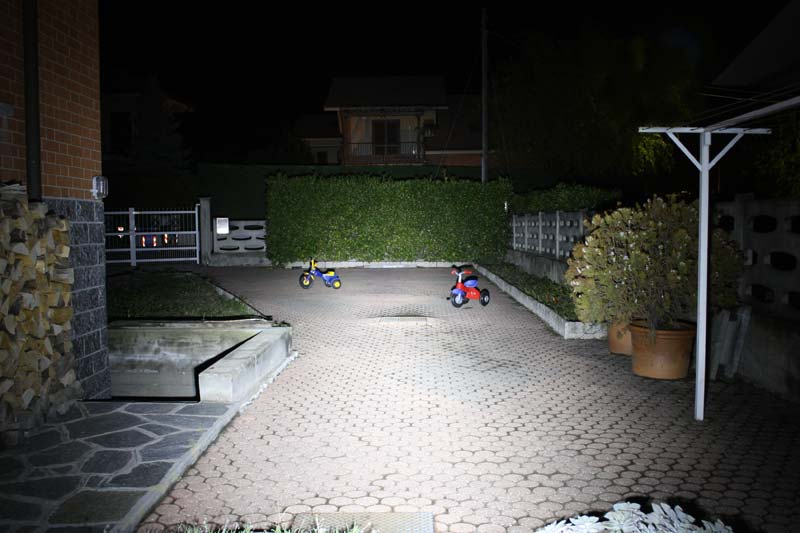
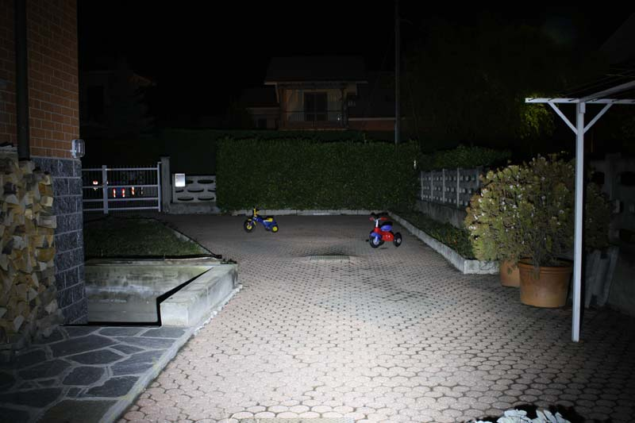
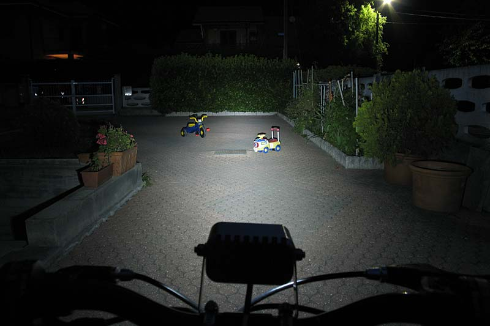
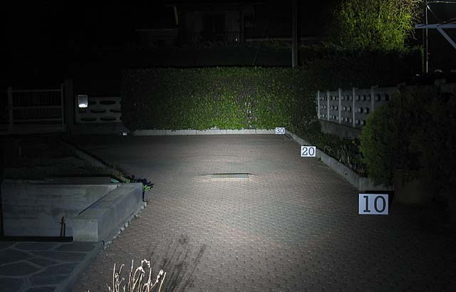
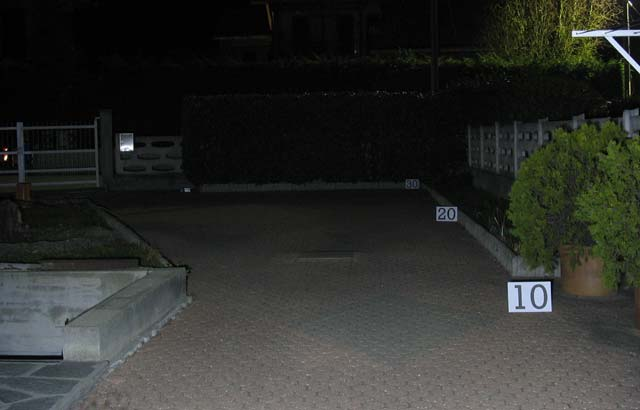
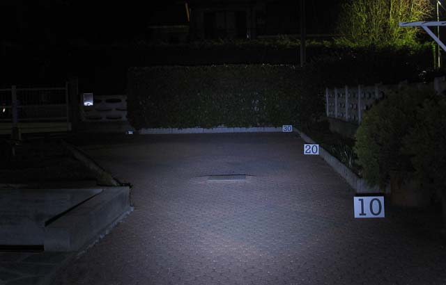
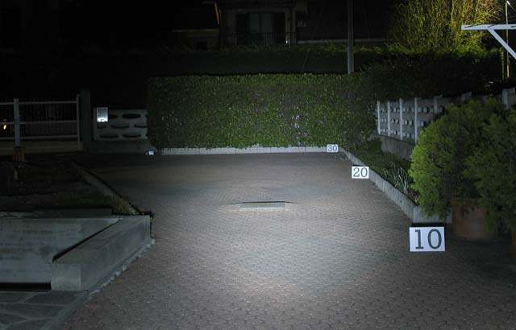
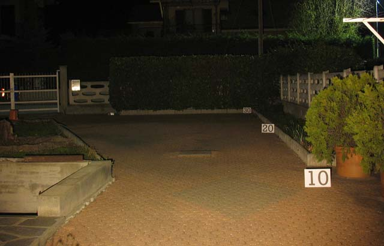

LED & illuminazione
Lampade LED Prova su strada
"Fai da te" di R.Chirio
Marzo 2007.
Dopo la progettazione e costruzione di lampade a led la prima cosa da fare è confrontare "su strada" la resa ottica della soluzione realizzata.
Le immagini che seguono, sono le prime finalizzate a confrontare la resa ottica e la distribuzione di luce, sono state tutte scattate in manuale con un'esposizione di 5 sec e un'apertura f. 4.0. la fotocamera piazzata al metro 0 in asse verticale con la sorgente di luce sotto prova.
Lo studio è finalizzato a trovare la migliore soluzione per illuminazione uso MTB estremo (gare notturne) compromesso tra resa ottica e costi realizzativi.
Da come si può ben vedere la resa di una torcia economica solo con 51 led da 5mm è superiore a 100 led da 40000mcd con alimentazione corretta e stabilizzata. Per contro nella torcia i led vengono alimentati oltre le loro caratteristiche nominali e questo non è affidabile e vale solo come confronto assoluto, ma non è proponibile su strada.
07-11-2008

Prova di illuminamento con 2 Led Seoul P7, alimentazione 2800mA, 2 led accesi con lente Sekonix.
Uno con aggiuntivo Wide il secondo led con lente Narrow.
- Volutamente si sono mantenuti gli stessi valori di esposizione della immagine con 1 solo led, per fare vedere la grande quantità di luce ottenuta con due led P7 accesi. (2 sec. f5,6 400ASA)
07-11-2008

- Prova di illuminamento con 1 P7, alimentazione 2800mA, 1 led con lente Sekonix aggiuntivo Wide.
- Esposizione uguale alle altre prove sempre con P7 (2 sec. f5,6 400ASA)
7-07-2007

Prova di illuminamento con BIKELED II, entrambi led Seoul P4 accesi, sul fondo siamo a 25mt.
16-03-2007

3 x Luxeon K2 + KHATOD PL35006NK lens
9-03-2007

Luxeon star 3x3W Fraen Lens wide
9-03-2007

100 LEDs 5mm 40000mcd 15°
9-03-2007

51 LEDs 5mm Torch (torcia economica acquistata a HK)
{kind=link}
9-03-2007

Confronto con lampada alogena 12V 20W riflettore dicroico.
© Roberto Chirio: all rights reserved.